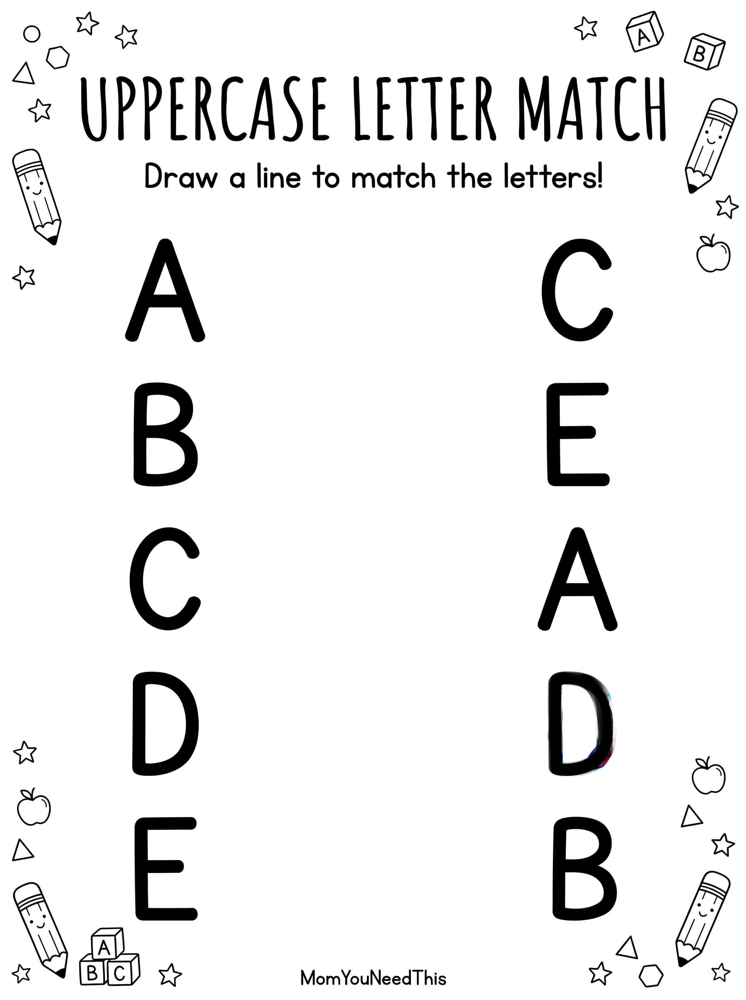

Printable Uppercase Letter Matching Worksheets Fun Alphabet Recognition Practice For Preschoolers
This free printable uppercase letter matching collection gives toddlers and preschoolers a fun, no-prep way to practise the alphabet's display letters. Capitals are the letters children meet in names, signs and book titles — big, bold and mostly unmistakable — which makes matching them the friendliest way into letter recognition. Print the worksheets and practice letters through play.
Quick Answer
Capitals are the letters kids meet first, and matching them is the friendly way in: these uppercase letter matching pages hold six free worksheets that cover the alphabet in sets — A to E, F to J, K to O, P to T, U to Y and V to Z. Toddlers and preschoolers match each capital to build recognition. No signup.
At a Glance
- Ages: Toddlers and preschoolers
- Activity: Matching uppercase letters in sets
- Skills: Uppercase letter recognition and matching
- Format: Printable worksheets (PDF)
- Cost: Free, no signup
🔠 How To Use This Printable
- Download and print the worksheet pages.
- Look at each letter on the left side of the page.
- Play together first, showing your child how to find the pairs.
- Level it up by covering the right side and naming the letter your child needs to find before they draw each line.
⭐ Choose An Uppercase Letter Matching Worksheet
Practice identifying and matching uppercase letters while strengthening alphabet recognition, visual memory, and early reading readiness. Each worksheet below focuses on capital letters — the shapes that start names and sentences — so choose the letter your child is working on, or start with the capitals in their own name.
Explore Uppercase Letter Matching Worksheets


Letters A–E
Practice matching uppercase letters A through E.
F-J
Letters F-J
Strengthen uppercase recognition with letters F through J.
K-O
Letters K-O
Continue building alphabet confidence with letters K through O.
P-T
Letters P-T
Complete uppercase alphabet practice with letters P through T.
U-Y
Letters U-Y
Complete uppercase alphabet practice with letters U through Y.
V-Z
Letters V-Z
Complete uppercase alphabet practice with letters V through Z.
What Kids Learn
Uppercase matching builds letter recognition on the alphabet's most distinct shapes: no two capitals are mirror images, so children learn each letter as its own character. That confidence carries into names, environmental print and sentence starts — and prepares the trickier lowercase set, where the flipped pairs live.
📚 Continue Building Alphabet Skills
Explore lowercase letter matching, letter tracing, beginning sounds, alphabet coloring pages, and more printable preschool activities.
🔤 Explore More Letter ActivitiesMore Free Learning Resources
Discover printable alphabet worksheets, tracing activities, coloring pages, learning games, and preschool resources designed to make learning fun.
🎁 View Free Learning Resources❓ Uppercase Letter Matching Pages FAQ
Is this uppercase letter matching pages printable really free?
Yes — these uppercase letter matching pages are 100% free to download and print at home. No signup and no payment needed. Just tap the download button and print as many copies as you like.
What ages is this printable best for?
It is made for toddlers and preschoolers. Little ones can enjoy it with a grown-up’s help, while older preschoolers can work on it more independently.
How do we play the matching game?
Print the worksheet, then draw a line from each letter on the left to the same letter on the right. Say each letter's name out loud as you find its match — capitals reward naming, since these are the letters that spell your child's name and start every sentence.
🔡 Why Capitals Are The Right First Match
Capitals are the alphabet's public face. They start names and sentences, headline book covers and shout from signs — and they are designed, by centuries of use, to be told apart at a glance. No capital is another capital flipped or rotated, which is precisely why matching them is the right first matching game: every letter wins on its own shape.
That distinctness makes uppercase matching a confidence engine. A child who can match all twenty-six capitals owns the alphabet's cast of characters; the sounds, the lowercase partners and the flipped pairs can each be layered on afterward, one challenge at a time.
Start with the letters in your child's name — the capital that starts it is usually the first letter a child truly owns — then work through the alphabet. When capitals are solid, the lowercase matching pages are the natural next step.
🔗 More Free Printables You’ll Love
- 🔡 Free Lowercase Letter Matching PagesFree printable lowercase letter matching pages for little learners.
- 🔤 Free Uppercase Letter AFree printable uppercase letter a for little learners.
- 🎨 Free Alphabet Coloring PagesFree printable alphabet coloring pages for little learners.
- ✏️ Free Uppercase Letter TracingFree printable uppercase letter tracing for little learners.